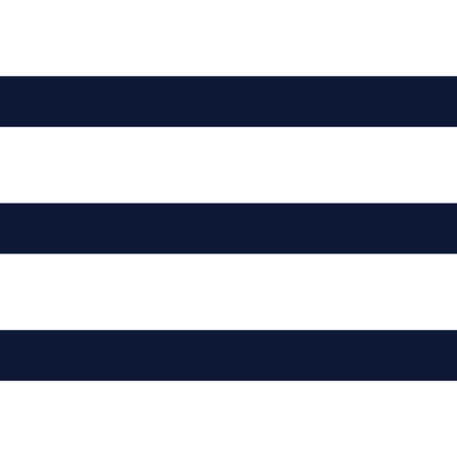
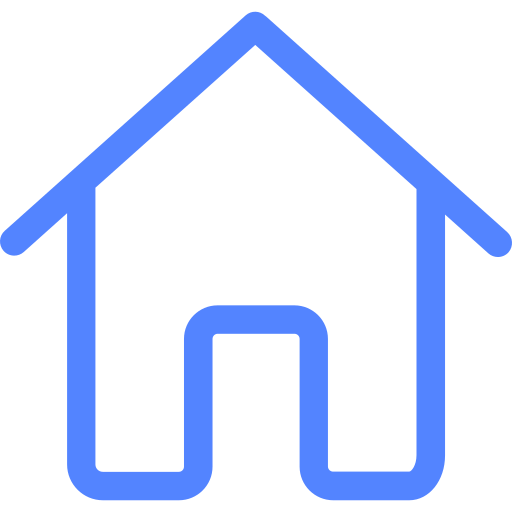
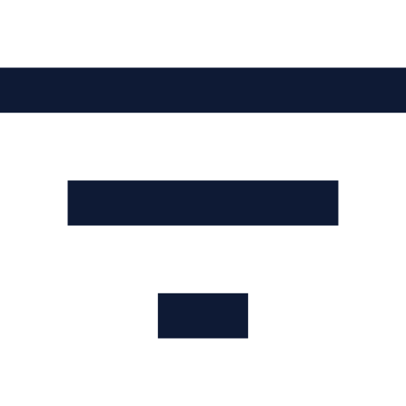

<div class="system_window">
    <div class="sideBar">
      <aside >
        <div class="button button_menu">
          <div class="chevron active">
            
          </div>
          <div class="chevron ">
            
          </div>
          
        </div>
        <div class="side__header">
          <div class="side__logo">
            <!---->
          </div>
          <h1>ToDo</h1>
        </div>
        <div class="side_section">
          <ul class="side_menu">
            <li class="side_menu__iteam " routerLinkActive="active">
              <div class="side_menu__iteam__icon">
                
              </div>
              <a [routerLink]="['/home']">Home</a>
            </li>
            <li class="side_menu__iteam" routerLinkActive="active">
              <div class="side_menu__iteam__icon">
                
              </div>
              <a [routerLink]="['/setting']">Setting</a>
            </li>
          </ul>
        </div>
      </aside>
    </div>
    <div class="content">
          <header>
            <div class="header">
              <div class="button button_filter">
                
              </div>
              <div class="button button_sorting">
                
              </div>
              <div class="button button_add">
                <div class="btn btn-primary" (click)="openTaskCreater()">
                  + Add ToDo
                </div>
              </div>
              <div class="button button_profile">
                <div class="ava">
                  
                </div>
                <div class="chevron active">
                  
                </div>
                <div class="chevron">
                  
                </div>
              </div>
            </div>
          </header>
          <aside
            >
            <tdl-creater
              *ngIf="isCreaterVisible"
              (onCreaterCancel)="closeTaskCreater()"
            ></tdl-creater>
          </aside>
          <section>
              <router-outlet

              ></router-outlet>
          </section>
    </div>
</div>


